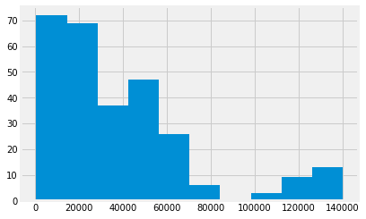

Money and death
We return to the death penalty.
import numpy as np
import pandas as pd
import matplotlib.pyplot as plt
%matplotlib inline
# Make plots look a little bit more fancy
plt.style.use('fivethirtyeight')
In this case, we are going to analyze whether people with higher incomes are more likely to favor the death penalty.
To do this, we are going to analyze the results from a sample of the US General Social Survey from 2002.
If you are running on your laptop, download the data file GSS2002.csv.
# Read the data into a data frame
gss = pd.read_csv('GSS2002.csv')
gss
| ID | Region | Gender | Race | Education | Marital | Religion | Happy | Income | PolParty | ... | Marijuana | DeathPenalty | OwnGun | GunLaw | SpendMilitary | SpendEduc | SpendEnv | SpendSci | Pres00 | Postlife | |
|---|---|---|---|---|---|---|---|---|---|---|---|---|---|---|---|---|---|---|---|---|---|
| 0 | 1 | South Central | Female | White | HS | Divorced | Inter-nondenominational | Pretty happy | 30000-34999 | Strong Rep | ... | NaN | Favor | No | Favor | Too little | Too little | About right | About right | Bush | Yes |
| 1 | 2 | South Central | Male | White | Bachelors | Married | Protestant | Pretty happy | 75000-89999 | Not Str Rep | ... | Not legal | Favor | Yes | Oppose | About right | Too little | About right | About right | Bush | Yes |
| 2 | 3 | South Central | Female | White | HS | Separated | Protestant | NaN | 35000-39999 | Strong Rep | ... | NaN | NaN | NaN | NaN | NaN | NaN | NaN | NaN | Bush | NaN |
| 3 | 4 | South Central | Female | White | Left HS | Divorced | Protestant | NaN | 50000-59999 | Ind, Near Dem | ... | NaN | NaN | NaN | NaN | About right | Too little | Too little | Too little | NaN | NaN |
| 4 | 5 | South Central | Male | White | Left HS | Divorced | Protestant | NaN | 40000-49999 | Ind | ... | NaN | NaN | NaN | NaN | NaN | NaN | NaN | NaN | NaN | NaN |
| 5 | 6 | South Central | Male | White | HS | Divorced | Catholic | Pretty happy | 40000-49999 | Ind, Near Rep | ... | NaN | Favor | Yes | Oppose | Too little | Too little | Too little | Too little | Bush | Yes |
| 6 | 7 | South Central | Female | White | Bachelors | Married | Protestant | NaN | NaN | Strong Rep | ... | NaN | NaN | NaN | NaN | NaN | NaN | NaN | NaN | Bush | NaN |
| 7 | 8 | South Central | Female | White | HS | Married | Protestant | NaN | NaN | Ind | ... | NaN | NaN | NaN | NaN | Too little | Too little | About right | About right | Bush | NaN |
| 8 | 9 | South Central | Male | White | HS | Divorced | Catholic | Not too happy | 60000-74999 | Strong Rep | ... | Legal | Favor | Yes | Oppose | NaN | NaN | NaN | NaN | Bush | Yes |
| 9 | 10 | South Central | Female | Other | HS | Never Married | Catholic | NaN | under 1000 | Ind, Near Rep | ... | NaN | NaN | NaN | NaN | Too much | Too little | Too little | Too little | NaN | NaN |
| 10 | 11 | South Central | Male | White | HS | Married | None | NaN | 50000-59999 | Strong Rep | ... | NaN | NaN | NaN | NaN | NaN | NaN | NaN | NaN | NaN | NaN |
| 11 | 12 | South Central | Male | White | Left HS | Married | Protestant | NaN | 110000-129999 | Not Str Rep | ... | NaN | NaN | NaN | NaN | About right | About right | Too much | Too much | Bush | NaN |
| 12 | 13 | South Central | Male | Black | Graduate | Married | Catholic | NaN | 90000-109999 | Not Str Dem | ... | NaN | NaN | NaN | NaN | Too much | About right | Too little | About right | NaN | NaN |
| 13 | 14 | South Central | Female | White | HS | Divorced | Protestant | Pretty happy | 10000-124999 | Strong Rep | ... | Not legal | Favor | No | Favor | NaN | NaN | NaN | NaN | Bush | Yes |
| 14 | 15 | South Central | Female | Other | HS | Married | Moslem/Islam | NaN | NaN | Ind, Near Rep | ... | NaN | NaN | NaN | NaN | About right | Too much | Too much | Too much | NaN | NaN |
| 15 | 16 | South Central | Female | White | HS | Married | Orthodox-Christian | NaN | NaN | Ind | ... | NaN | NaN | NaN | NaN | NaN | NaN | NaN | NaN | NaN | NaN |
| 16 | 17 | South Central | Female | White | HS | Divorced | Christian | Not too happy | NaN | Not Str Rep | ... | NaN | Favor | No | Favor | About right | Too little | Too little | About right | NaN | Yes |
| 17 | 18 | South Central | Male | White | HS | Never Married | Protestant | Very happy | 40000-49999 | Strong Rep | ... | Legal | Favor | NaN | NaN | NaN | NaN | NaN | NaN | Bush | Yes |
| 18 | 19 | South Central | Male | White | Jr Col | Divorced | None | Pretty happy | 75000-89999 | Ind, Near Dem | ... | Legal | Favor | Yes | Oppose | Too little | About right | Too much | About right | NaN | NaN |
| 19 | 20 | South Central | Male | White | HS | Never Married | None | NaN | 25000-29999 | Other party | ... | NaN | NaN | NaN | NaN | NaN | NaN | NaN | NaN | Nader | NaN |
| 20 | 21 | South Central | Female | Black | HS | Never Married | Protestant | NaN | 25000-29999 | Ind | ... | NaN | NaN | NaN | NaN | NaN | NaN | NaN | NaN | NaN | NaN |
| 21 | 22 | South Central | Male | Black | HS | Separated | Catholic | Pretty happy | 17500-19999 | Not Str Dem | ... | NaN | Oppose | No | Favor | About right | Too little | Too little | About right | NaN | Yes |
| 22 | 23 | South Central | Male | Other | Bachelors | Married | Moslem/Islam | Not too happy | 50000-59999 | Not Str Dem | ... | Legal | Favor | NaN | NaN | NaN | NaN | NaN | NaN | Gore | Yes |
| 23 | 24 | South Central | Female | Black | HS | Married | Protestant | NaN | 40000-49999 | Not Str Dem | ... | NaN | NaN | NaN | NaN | NaN | NaN | NaN | NaN | Gore | NaN |
| 24 | 25 | South Central | Male | White | HS | Married | Protestant | NaN | 40000-49999 | Strong Rep | ... | NaN | NaN | NaN | NaN | NaN | NaN | NaN | NaN | Bush | NaN |
| 25 | 26 | South Central | Female | White | HS | Widowed | Protestant | NaN | NaN | Other party | ... | NaN | NaN | NaN | NaN | Too little | Too little | About right | About right | Bush | NaN |
| 26 | 27 | South Central | Female | White | HS | Widowed | Catholic | Pretty happy | NaN | Other party | ... | NaN | Favor | No | Favor | NaN | NaN | NaN | NaN | Bush | Yes |
| 27 | 28 | South Central | Female | Other | Bachelors | Divorced | None | NaN | 25000-29999 | Ind, Near Dem | ... | NaN | NaN | NaN | NaN | Too much | Too little | Too little | Too little | NaN | NaN |
| 28 | 29 | South Central | Female | Other | HS | Never Married | Catholic | NaN | 1000-2999 | Ind | ... | NaN | NaN | NaN | NaN | NaN | NaN | NaN | NaN | NaN | NaN |
| 29 | 30 | South Central | Female | White | HS | Never Married | Protestant | NaN | 10000-124999 | Ind | ... | NaN | NaN | NaN | NaN | About right | NaN | About right | NaN | NaN | NaN |
| ... | ... | ... | ... | ... | ... | ... | ... | ... | ... | ... | ... | ... | ... | ... | ... | ... | ... | ... | ... | ... | ... |
| 2735 | 2736 | South Atlantic | Male | White | Graduate | Married | Protestant | Pretty happy | NaN | Strong Rep | ... | Not legal | Favor | Yes | Favor | Too little | Too much | Too much | Too little | Bush | Yes |
| 2736 | 2737 | South Atlantic | Female | White | Bachelors | Married | Protestant | NaN | 25000-29999 | Strong Rep | ... | NaN | NaN | NaN | NaN | NaN | NaN | NaN | NaN | Bush | NaN |
| 2737 | 2738 | South Atlantic | Female | Black | HS | Married | Protestant | Pretty happy | 60000-74999 | Strong Dem | ... | Not legal | Oppose | NaN | NaN | NaN | NaN | NaN | NaN | Gore | Yes |
| 2738 | 2739 | South Atlantic | Female | White | HS | Widowed | Protestant | Pretty happy | 25000-29999 | Strong Dem | ... | Legal | NaN | No | Favor | NaN | Too little | Too little | About right | Gore | Yes |
| 2739 | 2740 | South Atlantic | Female | White | Left HS | Separated | Protestant | NaN | NaN | Strong Rep | ... | NaN | NaN | NaN | NaN | NaN | NaN | NaN | NaN | Bush | NaN |
| 2740 | 2741 | South Atlantic | Female | White | Bachelors | Separated | Protestant | NaN | NaN | Ind, Near Rep | ... | NaN | NaN | NaN | NaN | NaN | NaN | NaN | NaN | Bush | NaN |
| 2741 | 2742 | South Atlantic | Male | White | HS | Married | Protestant | Pretty happy | 15000-17499 | Not Str Rep | ... | NaN | Favor | Yes | Favor | NaN | NaN | NaN | NaN | Bush | Yes |
| 2742 | 2743 | South Atlantic | Male | White | HS | Never Married | Protestant | Pretty happy | 25000-29999 | Ind, Near Rep | ... | Legal | Favor | NaN | NaN | Too little | Too little | Too little | Too little | Bush | Yes |
| 2743 | 2744 | South Atlantic | Male | Black | HS | Married | Protestant | NaN | 22500-24999 | Strong Dem | ... | NaN | NaN | NaN | NaN | NaN | NaN | NaN | NaN | NaN | NaN |
| 2744 | 2745 | South Atlantic | Male | White | HS | Never Married | Protestant | NaN | NaN | Ind, Near Rep | ... | NaN | NaN | NaN | NaN | About right | Too little | About right | Too little | NaN | NaN |
| 2745 | 2746 | Pacific | Female | White | Bachelors | Married | Protestant | Pretty happy | NaN | Not Str Rep | ... | NaN | Favor | No | Favor | NaN | NaN | NaN | NaN | Bush | NaN |
| 2746 | 2747 | Pacific | Female | White | HS | Widowed | Catholic | Pretty happy | NaN | Strong Rep | ... | Not legal | Oppose | NaN | NaN | Too little | Too little | Too much | Too little | Bush | Yes |
| 2747 | 2748 | Pacific | Female | White | HS | Never Married | Protestant | Very happy | 8000-9999 | Not Str Rep | ... | NaN | Favor | Yes | Favor | NaN | NaN | NaN | NaN | NaN | Yes |
| 2748 | 2749 | Pacific | Female | White | HS | Widowed | Protestant | NaN | NaN | Not Str Dem | ... | NaN | NaN | NaN | NaN | Too little | Too little | Too much | About right | Gore | NaN |
| 2749 | 2750 | Mid-Atl | Male | White | Jr Col | Married | Protestant | NaN | 22500-24999 | Not Str Rep | ... | NaN | NaN | NaN | NaN | NaN | NaN | NaN | NaN | Bush | NaN |
| 2750 | 2751 | Mid-Atl | Female | White | HS | Married | Protestant | Not too happy | 6000-6999 | Ind | ... | Not legal | NaN | NaN | NaN | NaN | NaN | NaN | NaN | Gore | Yes |
| 2751 | 2752 | Mid-Atl | Male | White | Left HS | Married | Protestant | NaN | 22500-24999 | Strong Rep | ... | NaN | NaN | NaN | NaN | Too little | Too little | Too little | About right | NaN | NaN |
| 2752 | 2753 | South Central | Female | White | Jr Col | Married | Protestant | NaN | NaN | Other party | ... | NaN | NaN | NaN | NaN | NaN | NaN | NaN | NaN | NaN | NaN |
| 2753 | 2754 | South Central | Male | Black | HS | Never Married | Catholic | Very happy | 35000-39999 | Not Str Dem | ... | NaN | Favor | No | Favor | About right | Too little | Too little | Too little | Bush | NaN |
| 2754 | 2755 | South Central | Female | White | HS | Divorced | Protestant | NaN | NaN | Strong Rep | ... | NaN | NaN | NaN | NaN | About right | About right | Too little | About right | Bush | NaN |
| 2755 | 2756 | South Central | Female | White | HS | Married | Protestant | NaN | 35000-39999 | Not Str Dem | ... | NaN | NaN | NaN | NaN | NaN | NaN | NaN | NaN | Bush | NaN |
| 2756 | 2757 | South Central | Male | Black | HS | Married | Protestant | Very happy | 30000-34999 | Strong Dem | ... | Not legal | Favor | No | Favor | NaN | NaN | NaN | NaN | Gore | Yes |
| 2757 | 2758 | New Engl | Male | White | HS | Divorced | Protestant | NaN | 6000-6999 | Not Str Rep | ... | NaN | NaN | NaN | NaN | NaN | NaN | NaN | NaN | NaN | NaN |
| 2758 | 2759 | New Engl | Female | White | HS | Never Married | None | NaN | 12500-14999 | Ind, Near Dem | ... | NaN | NaN | NaN | NaN | NaN | NaN | NaN | NaN | Gore | NaN |
| 2759 | 2760 | New Engl | Female | White | HS | Divorced | None | NaN | 20000-22499 | Not Str Rep | ... | NaN | NaN | NaN | NaN | Too much | About right | Too little | NaN | NaN | NaN |
| 2760 | 2761 | New Engl | Male | White | Left HS | Never Married | None | Pretty happy | 22500-24999 | Ind, Near Dem | ... | Legal | Favor | NaN | NaN | NaN | NaN | NaN | NaN | NaN | Yes |
| 2761 | 2762 | New Engl | Male | White | Bachelors | Married | None | NaN | NaN | Ind, Near Dem | ... | NaN | NaN | NaN | NaN | NaN | NaN | NaN | NaN | Nader | NaN |
| 2762 | 2763 | New Engl | Female | White | HS | Married | Catholic | NaN | NaN | Not Str Rep | ... | NaN | NaN | NaN | NaN | Too little | Too much | Too much | About right | Bush | NaN |
| 2763 | 2764 | South Atlantic | Male | Black | HS | Never Married | Protestant | NaN | NaN | Ind | ... | NaN | NaN | NaN | NaN | About right | Too little | Too little | Too much | NaN | NaN |
| 2764 | 2765 | South Atlantic | Male | White | HS | Married | Protestant | Very happy | 60000-74999 | Not Str Rep | ... | Legal | Oppose | Yes | Favor | NaN | NaN | NaN | NaN | Bush | Yes |
2765 rows × 21 columns
Each row corresponds to a single respondent.
Show the column names:
gss.columns
Index(['ID', 'Region', 'Gender', 'Race', 'Education', 'Marital', 'Religion',
'Happy', 'Income', 'PolParty', 'Politics', 'Marijuana', 'DeathPenalty',
'OwnGun', 'GunLaw', 'SpendMilitary', 'SpendEduc', 'SpendEnv',
'SpendSci', 'Pres00', 'Postlife'],
dtype='object')
We want to work with only two columns from this data frame. These are “Income”, and “DeathPenalty”.
“Income” gives the income bracket of the respondent. “DeathPenalty” is the answer to a question about whether they “Favor” or “Oppose” the death penalty.
First make a list with the names of the columns that we want.
cols = ['Income', 'DeathPenalty']
cols
['Income', 'DeathPenalty']
Next make a new data frame by indexing the data frame with this list.
The new data frame has only the columns we selected.
money_death = gss[cols]
money_death
| Income | DeathPenalty | |
|---|---|---|
| 0 | 30000-34999 | Favor |
| 1 | 75000-89999 | Favor |
| 2 | 35000-39999 | NaN |
| 3 | 50000-59999 | NaN |
| 4 | 40000-49999 | NaN |
| 5 | 40000-49999 | Favor |
| 6 | NaN | NaN |
| 7 | NaN | NaN |
| 8 | 60000-74999 | Favor |
| 9 | under 1000 | NaN |
| 10 | 50000-59999 | NaN |
| 11 | 110000-129999 | NaN |
| 12 | 90000-109999 | NaN |
| 13 | 10000-124999 | Favor |
| 14 | NaN | NaN |
| 15 | NaN | NaN |
| 16 | NaN | Favor |
| 17 | 40000-49999 | Favor |
| 18 | 75000-89999 | Favor |
| 19 | 25000-29999 | NaN |
| 20 | 25000-29999 | NaN |
| 21 | 17500-19999 | Oppose |
| 22 | 50000-59999 | Favor |
| 23 | 40000-49999 | NaN |
| 24 | 40000-49999 | NaN |
| 25 | NaN | NaN |
| 26 | NaN | Favor |
| 27 | 25000-29999 | NaN |
| 28 | 1000-2999 | NaN |
| 29 | 10000-124999 | NaN |
| ... | ... | ... |
| 2735 | NaN | Favor |
| 2736 | 25000-29999 | NaN |
| 2737 | 60000-74999 | Oppose |
| 2738 | 25000-29999 | NaN |
| 2739 | NaN | NaN |
| 2740 | NaN | NaN |
| 2741 | 15000-17499 | Favor |
| 2742 | 25000-29999 | Favor |
| 2743 | 22500-24999 | NaN |
| 2744 | NaN | NaN |
| 2745 | NaN | Favor |
| 2746 | NaN | Oppose |
| 2747 | 8000-9999 | Favor |
| 2748 | NaN | NaN |
| 2749 | 22500-24999 | NaN |
| 2750 | 6000-6999 | NaN |
| 2751 | 22500-24999 | NaN |
| 2752 | NaN | NaN |
| 2753 | 35000-39999 | Favor |
| 2754 | NaN | NaN |
| 2755 | 35000-39999 | NaN |
| 2756 | 30000-34999 | Favor |
| 2757 | 6000-6999 | NaN |
| 2758 | 12500-14999 | NaN |
| 2759 | 20000-22499 | NaN |
| 2760 | 22500-24999 | Favor |
| 2761 | NaN | NaN |
| 2762 | NaN | NaN |
| 2763 | NaN | NaN |
| 2764 | 60000-74999 | Oppose |
2765 rows × 2 columns
There are many missing question responses, indicated by NaN. To
make our life easier, we drop the respondents who didn’t specify an
income bracket, and those who did not give an answer to the death penalty
question. We use Pandas dropna method of the data frame, to drop all rows
that have any missing values in the row.
money_death = money_death.dropna()
money_death
| Income | DeathPenalty | |
|---|---|---|
| 0 | 30000-34999 | Favor |
| 1 | 75000-89999 | Favor |
| 5 | 40000-49999 | Favor |
| 8 | 60000-74999 | Favor |
| 13 | 10000-124999 | Favor |
| 17 | 40000-49999 | Favor |
| 18 | 75000-89999 | Favor |
| 21 | 17500-19999 | Oppose |
| 22 | 50000-59999 | Favor |
| 31 | 30000-34999 | Favor |
| 32 | 50000-59999 | Oppose |
| 33 | 75000-89999 | Oppose |
| 35 | under 1000 | Oppose |
| 36 | 7000-7999 | Oppose |
| 37 | 60000-74999 | Favor |
| 42 | 30000-34999 | Favor |
| 45 | 35000-39999 | Favor |
| 46 | under 1000 | Favor |
| 52 | 17500-19999 | Favor |
| 55 | 35000-39999 | Favor |
| 58 | 1000-2999 | Favor |
| 62 | 50000-59999 | Favor |
| 64 | 12500-14999 | Favor |
| 74 | 110000-129999 | Oppose |
| 77 | 75000-89999 | Favor |
| 78 | 35000-39999 | Favor |
| 81 | 30000-34999 | Favor |
| 92 | 20000-22499 | Favor |
| 93 | 60000-74999 | Favor |
| 95 | 60000-74999 | Oppose |
| ... | ... | ... |
| 2671 | 75000-89999 | Favor |
| 2677 | 1000-2999 | Oppose |
| 2678 | 15000-17499 | Favor |
| 2684 | under 1000 | Favor |
| 2689 | 3000-3999 | Favor |
| 2690 | 22500-24999 | Oppose |
| 2692 | 8000-9999 | Favor |
| 2696 | 3000-3999 | Oppose |
| 2697 | 30000-34999 | Favor |
| 2699 | 25000-29999 | Favor |
| 2702 | 8000-9999 | Oppose |
| 2706 | 10000-124999 | Oppose |
| 2709 | 12500-14999 | Oppose |
| 2714 | 12500-14999 | Favor |
| 2715 | 40000-49999 | Favor |
| 2716 | 130000-149999 | Favor |
| 2717 | 3000-3999 | Oppose |
| 2723 | 22500-24999 | Favor |
| 2725 | 40000-49999 | Favor |
| 2726 | 15000-17499 | Oppose |
| 2727 | 12500-14999 | Favor |
| 2729 | under 1000 | Favor |
| 2737 | 60000-74999 | Oppose |
| 2741 | 15000-17499 | Favor |
| 2742 | 25000-29999 | Favor |
| 2747 | 8000-9999 | Favor |
| 2753 | 35000-39999 | Favor |
| 2756 | 30000-34999 | Favor |
| 2760 | 22500-24999 | Favor |
| 2764 | 60000-74999 | Oppose |
904 rows × 2 columns
Get the income column.
income = money_death['Income']
Show the unique values:
income.value_counts()
40000-49999 88
30000-34999 78
50000-59999 72
25000-29999 60
35000-39999 54
60000-74999 51
20000-22499 44
12500-14999 44
130000-149999 43
22500-24999 40
110000-129999 38
17500-19999 37
15000-17499 36
10000-124999 36
1000-2999 32
8000-9999 32
75000-89999 26
3000-3999 19
under 1000 17
5000-5999 16
4000-4999 13
90000-109999 11
7000-7999 9
6000-6999 8
Name: Income, dtype: int64
These are strings. We want to get income as a number. We estimate this by recoding the “Income” column. We replace the string, giving the income bracket, with the average of the minimum and maximum in the range.
We can do this with a recoder function. We have not covered functions yet, so do not worry about the details of this function.
def recode_income(value):
if value == 'under 1000':
return 500
low_str, high_str = value.split('-')
low, high = int(low_str), int(high_str)
return np.mean([low, high])
Here is what the recoder function gives with the lowest income bracket.
recode_income('under 1000')
500
Here is the return from a higher bracket:
recode_income('90000-109999')
99999.5
Use this function to recode the “Income” strings into numbers. Again, we have not covered the apply method yet, so don’t worry about the details.
income_ish = income.apply(recode_income)
income_ish
0 32499.5
1 82499.5
5 44999.5
8 67499.5
13 67499.5
17 44999.5
18 82499.5
21 18749.5
22 54999.5
31 32499.5
32 54999.5
33 82499.5
35 500.0
36 7499.5
37 67499.5
42 32499.5
45 37499.5
46 500.0
52 18749.5
55 37499.5
58 1999.5
62 54999.5
64 13749.5
74 119999.5
77 82499.5
78 37499.5
81 32499.5
92 21249.5
93 67499.5
95 67499.5
...
2671 82499.5
2677 1999.5
2678 16249.5
2684 500.0
2689 3499.5
2690 23749.5
2692 8999.5
2696 3499.5
2697 32499.5
2699 27499.5
2702 8999.5
2706 67499.5
2709 13749.5
2714 13749.5
2715 44999.5
2716 139999.5
2717 3499.5
2723 23749.5
2725 44999.5
2726 16249.5
2727 13749.5
2729 500.0
2737 67499.5
2741 16249.5
2742 27499.5
2747 8999.5
2753 37499.5
2756 32499.5
2760 23749.5
2764 67499.5
Name: Income, Length: 904, dtype: float64
Now get the results of the answer to the death penalty question.
death = money_death['DeathPenalty']
death.value_counts()
Favor 622
Oppose 282
Name: DeathPenalty, dtype: int64
We will identify the rows for respondents who are in favor of the death penalty. To do this, we make a Boolean vector:
death == 'Favor'
0 True
1 True
5 True
8 True
13 True
17 True
18 True
21 False
22 True
31 True
32 False
33 False
35 False
36 False
37 True
42 True
45 True
46 True
52 True
55 True
58 True
62 True
64 True
74 False
77 True
78 True
81 True
92 True
93 True
95 False
...
2671 True
2677 False
2678 True
2684 True
2689 True
2690 False
2692 True
2696 False
2697 True
2699 True
2702 False
2706 False
2709 False
2714 True
2715 True
2716 True
2717 False
2723 True
2725 True
2726 False
2727 True
2729 True
2737 False
2741 True
2742 True
2747 True
2753 True
2756 True
2760 True
2764 False
Name: DeathPenalty, Length: 904, dtype: bool
Use this vector to select the income values for the respondents in favor of the death penalty. Show the distribution of values.
favor_income = income_ish[death == 'Favor']
favor_income.hist();

Likewise select incomes for those opposed. Show the distribution.
oppose_income = income_ish[death == 'Oppose']
oppose_income.hist();

Calculate the difference in mean income between the groups. This is the difference we observe.
actual_diff = np.mean(favor_income) - np.mean(oppose_income)
actual_diff
4535.163012246019
We want to know whether this difference in income is compatible with random sampling. That is, we want to know whether a difference this large is plausible, if the incomes are in fact random samples from the same population.
To estimate how variable the mean differences can be, for such random sampling, we simulate this sampling by pooling the income values that we have, from the two groups, and the permuting them.
First, we get the number of respondents in favor of the death penalty.
n_favor = len(favor_income)
n_favor
622
Then we pool the in-favor and oppose groups.
pooled = np.append(favor_income, oppose_income)
To do the random sampling we permute the values, so the pooled vector is
a random mixture of the two groups.
np.random.shuffle(pooled)
Treat the first n_favor observations from this shuffled vector as
our simulated in-favor group. The rest are our simulated oppose
group.
fake_favor = pooled[:n_favor]
fake_oppose = pooled[n_favor:]
Calculate the difference in means for this simulation.
fake_diff = np.mean(fake_favor) - np.mean(fake_oppose)
fake_diff
3143.6351793573704
Now it is your turn. Do this simulation 10000 times, to build up the distribution of differences compatible with random sampling.
Use the Brexit ages notebook for inspiration.
differences = np.zeros(10000)
for i in np.arange(10000):
# Permute the pooled incomes
np.random.shuffle(pooled)
# Make a fake favor sample
# Make a fake opposed sample
# Calculate the mean difference for the fake samples
# Put the mean difference into the differences array.
When you have that working, do a histogram of the differences.
# Your code here
You can get an idea of where the actual difference we saw sits on this histogram, and therefore how likely that difference is, assuming the incomes come from the same underlying population of incomes.
To be more specific, count how many of the differences you calculated were greater than or equal to the actual difference.
# Your code here
Now calculate the proportion of these differences, to give an estimate of the probability of seeing a difference this large, if the incomes all come from the same underlying population:
# Your code here